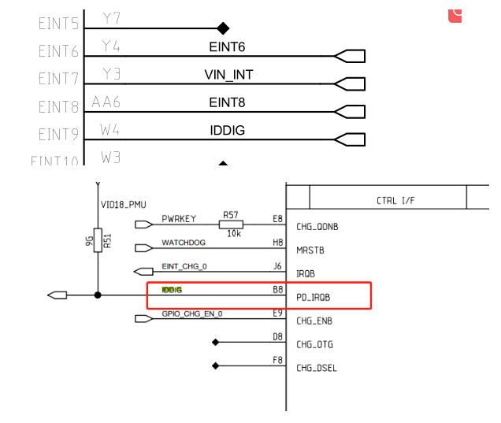
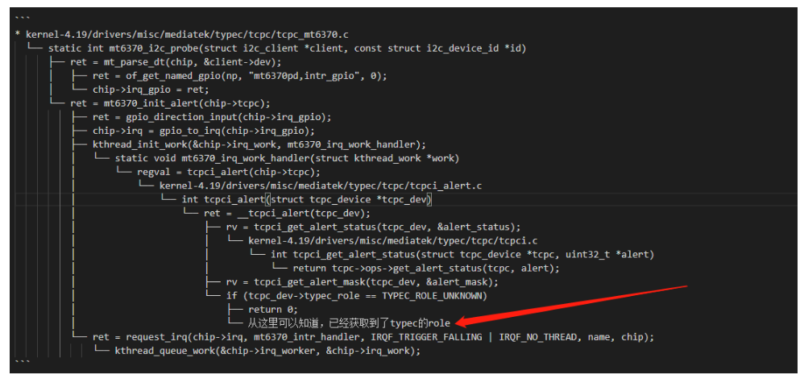

README
mt6762 otg检测过程
参考
概述

上图IDDIG引脚之前误以为是OTG的ID脚，发现是PD的中断，主要功能如下：
The TCPC has an open-drain output, active-low PD_IRQB pin. This pin is used to indicate
change of state, where the PD_IRQB pin is asserted when any Alert Bits are set
原理分析：OTG的识别有两种方式，一种是靠的是ID引脚，当OTG设备插入机器时，会自动将usb的ID pin引脚拉低，从而会触发中断，进而识别出有OTG设备插入。第二种是靠CC脚电平变化判断，目前mt6762平台采用的是第二种，第一种参考上面的链接。
补充1：
usb id pin一般为1.8v，默认可以连接电脑usb或adb，即机器默认做从设备device。 而usb id pin拉低到0v后，将触发usb切换为host模式，即可以连接otg设备。
IDDIG PD_IRQ代码分析
mt6765.dts：
这个没用，所以参考文章也是没用的
otg_iddig: otg_iddig{
compatible = "mediatek,usb_iddig_bi_eint";
};
&mt6370_typec {
mt6370pd,intr_gpio_num = <9>; /* direct defined GPIO num */
mt6370pd,intr_gpio = <&pio 9 0x0>;
};
剑锋分析

debug开关
tcpci_core.h:
/* The switch of log message */
#define TYPEC_INFO_ENABLE 1
#define TYPEC_INFO2_ENABLE 1
#define PE_EVENT_DBG_ENABLE 1
#define PE_STATE_INFO_ENABLE 1
#define TCPC_INFO_ENABLE 1
#define TCPC_TIMER_DBG_EN 0
#define TCPC_TIMER_INFO_EN 0
#define PE_INFO_ENABLE 1
#define TCPC_DBG_ENABLE 0
#define TCPC_DBG2_ENABLE 0
#define DPM_INFO_ENABLE 1
#define DPM_INFO2_ENABLE 1
#define DPM_DBG_ENABLE 0
#define PD_ERR_ENABLE 1
#define PE_DBG_ENABLE 1
#define TYPEC_DBG_ENABLE 1
#define DP_INFO_ENABLE 1
#define DP_DBG_ENABLE 1
#define UVDM_INFO_ENABLE 1
#define TCPM_DBG_ENABLE 1
#ifdef CONFIG_USB_PD_ALT_MODE_RTDC
#define DC_INFO_ENABLE 1
#define DC_DBG_ENABLE 1
#endif /* CONFIG_USB_PD_ALT_MODE_RTDC */
type-c TCP_NOTIFY_TYPEC_STATE事件处理
typec state所有事件如下：
enum typec_attach_type {
TYPEC_UNATTACHED = 0, 没接
TYPEC_ATTACHED_SNK, 手机作为sink端
TYPEC_ATTACHED_SRC, 手机作为source端
TYPEC_ATTACHED_AUDIO, 手机作为audio输出
TYPEC_ATTACHED_DEBUG, /* Rd, Rd */
/* CONFIG_TYPEC_CAP_DBGACC_SNK */
TYPEC_ATTACHED_DBGACC_SNK, /* Rp, Rp */
/* CONFIG_TYPEC_CAP_CUSTOM_SRC */
TYPEC_ATTACHED_CUSTOM_SRC, /* Same Rp */
/* CONFIG_TYPEC_CAP_NORP_SRC */
TYPEC_ATTACHED_NORP_SRC, /* No Rp */
};
CC处理线程逻辑：
* `kernel-4.19\drivers\misc\mediatek\typec\tcpc\tcpc_mt6370.c`:
└── mt6370_i2c_probe
└── mt6370_tcpcdev_init(chip, &client->dev);
└── chip->tcpc = tcpc_device_register(dev,desc, &mt6370_tcpc_ops, chip);
└── tcpci_timer_init(tcpc); //创建中断timer
├── hrtimer_init(&tcpc_dev->tcpc_timer[i],CLOCK_MONOTONIC, HRTIMER_MODE_REL); //初始化定时器
├── tcpc_dev->tcpc_timer[i].function = tcpc_timer_call[i]; //注册各种timer，具体下面说明
└── kthread_create(tcpc_timer_thread, tcpc_dev, //创建线程
├── wait_event_interruptible(tcpc_dev->timer_wait_que, //将本进程置为可中断的挂起状态
└── tcpc_handle_timer_triggered(tcpc_dev); //主要处理函数
└── tcpc_typec_handle_timeout(tcpc_dev, i);
└── typec_handle_debounce_timeout(tcpc_dev);
├── typec_handle_cc_changed_entry(tcpc_dev); //处理CC事件 tcpci_typec.c
└── TYPEC_INFO("[CC_Change] %d/%d\r\n", typec_get_cc1(), typec_get_cc2()); //打印CC 如TCPC-TYPEC:[CC_Change] 5/0
├── if (typec_is_act_as_sink_role(tcpc_dev))
│ ├── typec_cc_change_sink_entry(tcpc_dev); //处理sink入口
│ │ └── typec_cc_snk_detect_entry(tcpc_dev);
│ │ ├── if (tcpci_check_vbus_valid(tcpc_dev)) /* If Port Partner act as Source without VBUS, wait vSafe5V */
│ │ └── typec_cc_snk_detect_vsafe5v_entry(tcpc_dev);
│ │ └── typec_sink_attached_entry(tcpc_dev);
│ │ └── typec_custom_src_attached_entry(tcpc_dev);
│ │ └── tcpc_dev->typec_attach_new = TYPEC_ATTACHED_SNK; //赋值新状态
│ └── else typec_cc_change_source_entry(tcpc_dev); //处理source入口
├── typec_alert_attach_state_change(tcpc_dev); //tcpci_alert.c
└── TYPEC_INFO("Attached-> %s\r\n",typec_attach_name[tcpc_dev->typec_attach_new]); //重要打印attach 信息，如TCPC-TYPEC:Attached-> SINK
└── tcpci_report_usb_port_changed(tcpc_dev); //tcpci_alert.c 主要是notify通知
├── tcpci_notify_typec_state(tcpc); //tcpci.c
│ ├── tcp_noti.typec_state.polarity = tcpc->typec_polarity; //各种状态赋值
│ ├── tcp_noti.typec_state.old_state = tcpc->typec_attach_old;
│ ├── tcp_noti.typec_state.new_state = tcpc->typec_attach_new;
│ ├── tcp_noti.typec_state.rp_level = tcpc->typec_remote_rp_level;
│ └── tcpc_check_notify_time(tcpc, &tcp_noti,TCP_NOTIFY_IDX_USB, TCP_NOTIFY_TYPEC_STATE); //状态notify通知
│ ├── INIT_WORK(&tn_work->work, tcp_notify_func); //创建通知工作队列
│ └── queue_work(tcpc->evt_wq, &tn_work->work) ? 0 : -EAGAIN; //开始工作队列
│ └── srcu_notifier_call_chain(&tcpc->evt_nh[type], state, tcp_noti); //重要通知到其他驱动typec状态
├── if (tcpc->typec_attach_old == TYPEC_UNATTACHED) //从TYPEC_UNATTACHED到attach
└── tcpci_report_usb_port_attached(tcpc); //重要，主要是真正设置usb 状态，具体在下面解释
├── TCPC_INFO("usb_port_attached\r\n"); //打印usb_port_attached
├── typec_set_data_role(tcpc->typec_port, TYPEC_DEVICE);//设置数据方向
├── typec_set_pwr_role(tcpc->typec_port, TYPEC_SINK); //设置电源方向为sink
├── typec_set_vconn_role(tcpc->typec_port, TYPEC_SINK); //设置VCONN方向为sink
└── if (tcpc->pd_inited_flag) //查看代码flag是1
└── pd_put_cc_attached_event(tcpc, tcpc->typec_attach_new);
├── if (type == TYPEC_ATTACHED_SNK &&(rv || prop.intval == POWER_SUPPLY_USB_TYPE_UNKNOWN)) //如果usb类型还未识别，将等待bc1.2识别
└── tcpc_enable_timer(tcpc_dev, TYPEC_RT_TIMER_SINK_WAIT_BC12); //开启定时器，这里会调用定时器回调函数tcpc_timer_rt_sink_wait_bc12
├── TCPC_TIMER_TRIGGER() //唤醒处理线程
│ └── wake_up_interruptible(&tcpc_dev->timer_wait_que); \
│ └── tcpc_timer_thread(void *param) //线程
│ └── tcpc_handle_timer_triggered(tcpc_dev);
│ └── tcpc_typec_handle_timeout(tcpc_dev, i); //和上面一样，不做分析了
└── __pd_put_cc_attached_event(tcpc_dev, type);
└── __pd_put_event(tcpc_dev, &evt, false); // typec event事件上报
└── wake_up_interruptible(&tcpc_dev->event_loop_wait_que); //唤醒事件处理线程
└── tcpc_event_thread(void *param)
└── while (pd_policy_engine_run(tcpc_dev));
└── pd_pe_state_change(pd_port, pd_event); //这里不做深入分析了，应该是pd协议方面的事件处理
创建的timer如下，各种状态改变的：
static tcpc_hrtimer_call tcpc_timer_call[PD_TIMER_NR] = {
#ifdef CONFIG_USB_POWER_DELIVERY
tcpc_timer_discover_id,
tcpc_timer_bist_cont_mode,
tcpc_timer_hard_reset_complete,
tcpc_timer_no_response,
tcpc_timer_ps_hard_reset,
tcpc_timer_ps_source_off,
tcpc_timer_ps_source_on,
tcpc_timer_ps_transition,
tcpc_timer_sender_response,
tcpc_timer_sink_activity,
tcpc_timer_sink_request,
tcpc_timer_sink_wait_cap,
tcpc_timer_source_activity,
tcpc_timer_source_capability,
tcpc_timer_source_start,
tcpc_timer_vconn_on,
#ifdef CONFIG_USB_PD_VCONN_STABLE_DELAY
tcpc_timer_vconn_stable,
#endif /* CONFIG_USB_PD_VCONN_STABLE_DELAY */
tcpc_timer_vdm_mode_entry,
tcpc_timer_vdm_mode_exit,
tcpc_timer_vdm_response,
tcpc_timer_source_transition,
tcpc_timer_src_recover,
#ifdef CONFIG_USB_PD_REV30
tcpc_timer_ck_no_support,
#ifdef CONFIG_USB_PD_REV30_COLLISION_AVOID
tcpc_timer_sink_tx,
#endif /* CONFIG_USB_PD_REV30_COLLISION_AVOID */
#ifdef CONFIG_USB_PD_REV30_PPS_SOURCE
tcpc_timer_source_pps,
#endif /* CONFIG_USB_PD_REV30_PPS_SOURCE */
#endif /* CONFIG_USB_PD_REV30 */
/* PD_TIMER (out of spec )*/
tcpc_timer_vsafe0v_delay,
tcpc_timer_vsafe0v_tout,
tcpc_timer_pd_discard,
tcpc_timer_vbus_stable,
tcpc_timer_vbus_present,
tcpc_timer_uvdm_response,
tcpc_timer_dfp_flow_delay,
tcpc_timer_ufp_flow_delay,
tcpc_timer_vconn_ready,
tcpc_timer_vdm_postpone,
#ifdef CONFIG_USB_PD_REV30
#ifdef CONFIG_USB_PD_REV30_COLLISION_AVOID
tcpc_timer_deferred_evt,
#endif /* CONFIG_USB_PD_REV30_COLLISION_AVOID */
#ifdef CONFIG_USB_PD_REV30_SNK_FLOW_DELAY_STARTUP
tcpc_timer_snk_flow_delay,
#endif /* CONFIG_USB_PD_REV30_SNK_FLOW_DELAY_STARTUP */
#endif /* CONFIG_USB_PD_REV30 */
tcpc_timer_pe_idle_tout,
#endif /* CONFIG_USB_POWER_DELIVERY */
/* TYPEC_RT_TIMER (out of spec )*/
tcpc_timer_rt_vsafe0v_delay,
tcpc_timer_rt_vsafe0v_tout,
tcpc_timer_rt_role_swap_start,
tcpc_timer_rt_role_swap_stop,
tcpc_timer_rt_legacy,
tcpc_timer_rt_not_legacy,
tcpc_timer_rt_legacy_stable,
tcpc_timer_rt_legacy_recycle,
tcpc_timer_rt_auto_discharge,
tcpc_timer_rt_low_power_mode,
#ifdef CONFIG_USB_POWER_DELIVERY
tcpc_timer_rt_pe_idle,
#ifdef CONFIG_TYPEC_WAIT_BC12
tcpc_timer_rt_sink_wait_bc12,
#endif /* CONFIG_TYPEC_WAIT_BC12 */
#endif /* CONFIG_USB_POWER_DELIVERY */
tcpc_timer_error_recovery,
/* TYPEC-TRY-TIMER */
tcpc_timer_try_drp_try,
tcpc_timer_try_drp_trywait,
/* TYPEC-DEBOUNCE-TIMER */
tcpc_timer_ccdebounce,
tcpc_timer_pddebounce,
#ifdef CONFIG_COMPATIBLE_APPLE_TA
tcpc_timer_apple_cc_open,
#endif /* CONFIG_COMPATIBLE_APPLE_TA */
tcpc_timer_tryccdebounce,
tcpc_timer_srcdisconnect,
tcpc_timer_drp_src_toggle,
#ifdef CONFIG_TYPEC_CAP_NORP_SRC
tcpc_timer_norp_src,
#endif
};
* 正式设置usb sink source状态：
static inline int tcpci_report_usb_port_attached(struct tcpc_device *tcpc)
{
TCPC_INFO("usb_port_attached\r\n");
switch (tcpc->typec_attach_new) {
case TYPEC_ATTACHED_SNK:
case TYPEC_ATTACHED_CUSTOM_SRC:
case TYPEC_ATTACHED_NORP_SRC:
tcpc->dual_role_pr = DUAL_ROLE_PROP_PR_SNK;
tcpc->dual_role_dr = DUAL_ROLE_PROP_DR_DEVICE;
tcpc->dual_role_mode = DUAL_ROLE_PROP_MODE_UFP;
tcpc->dual_role_vconn = DUAL_ROLE_PROP_VCONN_SUPPLY_NO;
tcpc->typec_caps.type = TYPEC_PORT_SNK;
tcpc->typec_caps.data = TYPEC_PORT_UFP;
typec_set_data_role(tcpc->typec_port, TYPEC_DEVICE);
typec_set_pwr_role(tcpc->typec_port, TYPEC_SINK);
typec_set_vconn_role(tcpc->typec_port, TYPEC_SINK);
break;
case TYPEC_ATTACHED_SRC:
tcpc->dual_role_pr = DUAL_ROLE_PROP_PR_SRC;
tcpc->dual_role_dr = DUAL_ROLE_PROP_DR_HOST;
tcpc->dual_role_mode = DUAL_ROLE_PROP_MODE_DFP;
tcpc->dual_role_vconn = DUAL_ROLE_PROP_VCONN_SUPPLY_YES;
tcpc->typec_caps.type = TYPEC_PORT_SRC;
tcpc->typec_caps.data = TYPEC_PORT_DFP;
typec_set_data_role(tcpc->typec_port, TYPEC_HOST);
typec_set_pwr_role(tcpc->typec_port, TYPEC_SOURCE);
typec_set_vconn_role(tcpc->typec_port, TYPEC_SOURCE);
break;
default:
break;
}
/* set typec switch orientation */
typec_set_orientation(tcpc->typec_port, tcpc->typec_polarity ?
TYPEC_ORIENTATION_NORMAL : TYPEC_ORIENTATION_REVERSE);
tcpci_set_wake_lock_pd(tcpc, true);
#ifdef CONFIG_USB_POWER_DELIVERY
#ifdef CONFIG_USB_PD_DISABLE_PE
if (tcpc->disable_pe)
return 0;
#endif /* CONFIG_USB_PD_DISABLE_PE */
/* MTK Only */
if (tcpc->pd_inited_flag)
pd_put_cc_attached_event(tcpc, tcpc->typec_attach_new);
#endif /* CONFIG_USB_POWER_DLEIVERY */
return 0;
}
int tcpci_notify_typec_state(struct tcpc_device *tcpc)
{
struct tcp_notify tcp_noti;
int ret;
//以下是状态赋值
tcp_noti.typec_state.polarity = tcpc->typec_polarity;
tcp_noti.typec_state.old_state = tcpc->typec_attach_old;
tcp_noti.typec_state.new_state = tcpc->typec_attach_new;
tcp_noti.typec_state.rp_level = tcpc->typec_remote_rp_level;
//状态上报
ret = tcpc_check_notify_time(tcpc, &tcp_noti,
TCP_NOTIFY_IDX_USB, TCP_NOTIFY_TYPEC_STATE);
return ret;
}
notify通知函数剖析，实际上报函数为
srcu_notifier_call_chain：tcpc_check_notify_time(tcpc, &tcp_noti,TCP_NOTIFY_IDX_USB,TCP_NOTIFY_TYPEC_STATE);
INIT_WORK(&tn_work->work, tcp_notify_func);
queue_work(tcpc->evt_wq, &tn_work->work)
static void tcp_notify_func(struct work_struct *work)
{
struct tcp_notify_work *tn_work =
container_of(work, struct tcp_notify_work, work);
struct tcpc_device *tcpc = tn_work->tcpc;
struct tcp_notify *tcp_noti = &tn_work->tcp_noti;
uint8_t type = tn_work->type;
uint8_t state = tn_work->state;
#ifdef CONFIG_PD_BEGUG_ON
struct timeval begin, end;
int timeval = 0;
do_gettimeofday(&begin);
srcu_notifier_call_chain(&tcpc->evt_nh[type], state, tcp_noti); //SRCU 通知链,可阻塞
do_gettimeofday(&end);
timeval = (timeval_to_ns(end) - timeval_to_ns(begin))/1000/1000;
PD_BUG_ON(timeval > TCPC_NOTIFY_OVERTIME);
#else
srcu_notifier_call_chain(&tcpc->evt_nh[type], state, tcp_noti);
#endif
kfree(tn_work);
}
type-c TCP_NOTIFY_TYPEC_STATE事件监听
type-c事件监听，
CONFIG_MTK_USB_TYPEC定义了，选择typec识别OTG方式，注册通知链otg_tcp_notifier_call：
.config
1799:CONFIG_MTK_USB_TYPEC=y
* INIT_DELAYED_WORK(®ister_otg_work, do_register_otg_work);
* otg_nb.notifier_call = otg_tcp_notifier_call;
* register_tcp_dev_notifier(otg_tcpc_dev, &otg_nb,TCP_NOTIFY_TYPE_VBUS | TCP_NOTIFY_TYPE_USB |TCP_NOTIFY_TYPE_MISC);//注册通知链`otg_tcp_notifier_call`
void mt_usb_otg_init(struct musb *musb)
{
/* test */
INIT_DELAYED_WORK(&host_plug_test_work, do_host_plug_test_work);
ktime_start = ktime_get();
/* CONNECTION MANAGEMENT*/
#ifdef CONFIG_MTK_USB_TYPEC
DBG(0, "host controlled by TYPEC\n");
typec_control = 1;
#ifdef CONFIG_TCPC_CLASS //跑这里
INIT_DELAYED_WORK(®ister_otg_work, do_register_otg_work);
/* Add-BEGIN by (shanliangliang@paxsz.com), 2021/08/27 fix notifier reigister too late */
#if 0
queue_delayed_work(mtk_musb->st_wq, ®ister_otg_work, 0);
#else
schedule_delayed_work(®ister_otg_work,
msecs_to_jiffies(REGISTER_OTG_WORK_DELAY));
#endif
/* Add-END by (shanliangliang@paxsz.com), 2021/08/27 fix notifier reigister too late */
vbus_control = 0;
#endif
#else //第二种iddig方式
DBG(0, "host controlled by IDDIG\n");
iddig_int_init();
vbus_control = 1;
#endif
通知链处理typec状态，包括切换host devices处理，包括usb插入拔出处理：
剖析usb插入拔出事件操作
static int otg_tcp_notifier_call(struct notifier_block *nb,
unsigned long event, void *data)
{
struct tcp_notify *noti = data;
switch (event) {
case TCP_NOTIFY_SOURCE_VBUS:
DBG(0, "source vbus = %dmv\n", noti->vbus_state.mv);
if (noti->vbus_state.mv)
mt_usb_vbus_on(0);
else
mt_usb_vbus_off(0);
break;
case TCP_NOTIFY_TYPEC_STATE:
DBG(0, "TCP_NOTIFY_TYPEC_STATE, old_state=%d, new_state=%d\n",
noti->typec_state.old_state,
noti->typec_state.new_state);
/* Add-BEGIN by (shanliangliang@paxsz.com), 2021/08/15 add for M8 usb otg */
mtk_musb->typec_state = noti->typec_state.new_state;
/* Add-END by (shanliangliang@paxsz.com), 2021/08/15 add for M8 usb otg */
if (noti->typec_state.old_state == TYPEC_UNATTACHED &&
noti->typec_state.new_state == TYPEC_ATTACHED_SRC) {
DBG(0, "OTG Plug in\n");
mt_usb_host_connect(0);
/* Add-BEGIN by (shanliangliang@paxsz.com), 2021/09/23 add for M8 usb otg */
} else if (noti->typec_state.old_state == TYPEC_UNATTACHED &&
noti->typec_state.new_state == TYPEC_ATTACHED_SNK) {
mt_usb_host_disconnect(0);
mt_usb_connect();
/* Add-END by (shanliangliang@paxsz.com), 2021/09/23 add for M8 usb otg */
} else if ((noti->typec_state.old_state == TYPEC_ATTACHED_SRC ||
noti->typec_state.old_state == TYPEC_ATTACHED_SNK ||
noti->typec_state.old_state ==
TYPEC_ATTACHED_NORP_SRC) &&
noti->typec_state.new_state == TYPEC_UNATTACHED) {
/* Add-BEGIN by (shanliangliang@paxsz.com), 2021/08/15 add for M8 usb otg */
if (mtk_musb->default_mode != MUSB_HOST) {
if (is_host_active(mtk_musb)) {
DBG(0, "OTG Plug out\n");
mt_usb_host_disconnect(0);
} else {
DBG(0, "USB Plug out\n");
mt_usb_dev_disconnect();
}
}
else {
if ((noti->typec_state.old_state != TYPEC_ATTACHED_SRC) &&
(noti->typec_state.new_state == TYPEC_UNATTACHED)) {
if (is_host_active(mtk_musb)) {
DBG(0, "OTG Plug out\n");
mt_usb_host_disconnect(0);
} else {
DBG(0, "USB Plug out\n");
mt_usb_dev_disconnect();
}
if (mtk_musb->lcd_state != FB_BLANK_POWERDOWN) {
msleep(50);
mt_usb_host_connect(100);
}
}
else if ((noti->typec_state.old_state == TYPEC_ATTACHED_SRC) &&
(noti->typec_state.new_state == TYPEC_UNATTACHED)) {
if (mtk_musb->lcd_state == FB_BLANK_POWERDOWN) {
if (is_host_active(mtk_musb)) {
DBG(0, "OTG Plug out\n");
mt_usb_host_disconnect(0);
} else {
DBG(0, "USB Plug out\n");
mt_usb_dev_disconnect();
}
}
}
}
/* Add-END by (shanliangliang@paxsz.com), 2021/08/15 add for M8 usb otg */
#ifdef CONFIG_MTK_UART_USB_SWITCH
} else if ((noti->typec_state.new_state ==
TYPEC_ATTACHED_SNK ||
noti->typec_state.new_state ==
TYPEC_ATTACHED_CUSTOM_SRC ||
noti->typec_state.new_state ==
TYPEC_ATTACHED_NORP_SRC) &&
in_uart_mode) {
pr_info("%s USB cable plugged-in in UART mode.
Switch to USB mode.\n", __func__);
usb_phy_switch_to_usb();
#endif
}
break;
case TCP_NOTIFY_DR_SWAP:
DBG(0, "TCP_NOTIFY_DR_SWAP, new role=%d\n",
noti->swap_state.new_role);
if (is_host_active(mtk_musb) &&
noti->swap_state.new_role == PD_ROLE_UFP) {
DBG(0, "switch role to device\n");
mt_usb_host_disconnect(0);
mt_usb_connect();
} else if (is_peripheral_active(mtk_musb) &&
noti->swap_state.new_role == PD_ROLE_DFP) {
DBG(0, "switch role to host\n");
mt_usb_dev_disconnect();
mt_usb_host_connect(0);
}
break;
}
return NOTIFY_OK;
}